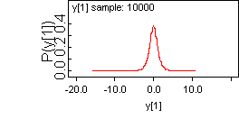
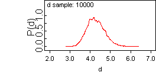
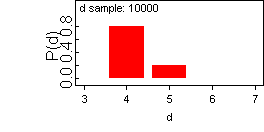
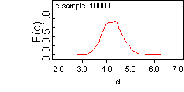

![[t-df0]](t-df0.bmp) Simulating data: learning about the
Simulating data: learning about thedegrees of freedom of a
t-distribution
This example uses simulated data: we generate n = 1000 observations from a (standard) t distribution with d = 4 degrees of freedom:
model {
d <- 4
for (i in 1 : 1000) {
y[i] ~ dt(0, 1, d)
}
}
We let the sampler run for a while (just to check that we're simulating from the correct distribution) and then we save a set of simulated data using the 'save state' facility (select Save State from the Model menu).
Check: should have mean 0, variance 2, etc.
mean sd MC_error val2.5pc median val97.5pc start sample
y[1] 0.01129 1.383 0.01415 -2.645 -0.01056 2.843 1001 10000

To analyse the simulated data: first we try a model for learning about the degrees of freedom as a continuous quantity:
Model:
model {
for (i in 1:1000) {
y[i] ~ dt(0, 1, d)
}
d ~ dunif(2, 100) # degrees of freedom must be at least two
}
mean sd MC_error val2.5pc median val97.5pc start sample
d 4.282 0.4398 0.01448 3.493 4.252 5.217 1001 10000

Now we attempt to model the degrees of freedom parameter with a discrete uniform prior on {2, 3, 4, ..., 50}. The sampler soon converges to d = 4 but mixes poorly.
Model:
model {
for (j in 1:49) {
p[j] <- 1 / 49
d.value[j] <- j + 1
}
for (i in 1:1000) {
y[i] ~ dt(0, 1, d)
}
K ~ dcat(p[])
d <- d.value[K]
}
mean sd MC_error val2.5pc median val97.5pc start sample
d 4.204 0.4102 0.03144 4.0 4.0 5.0 1001 10000

We should get better mixing if we specify the prior for d on a finer grid, e.g. {2.0, 2.1, 2.2, ..., 6.0}:
Model:
model {
for (j in 1:41) {
p[j] <- 1 / 41
d.value[j] <- 2 + (j - 1) * 0.1
}
for (i in 1:1000) {
y[i] ~ dt(0, 1, d)
}
K ~ dcat(p[])
d <- d.value[K]
}
mean sd MC_error val2.5pc median val97.5pc start sample
d 4.277 0.4162 0.01194 3.5 4.3 5.1 1001 10000

Simulated data:
click to opensimulated t4 data